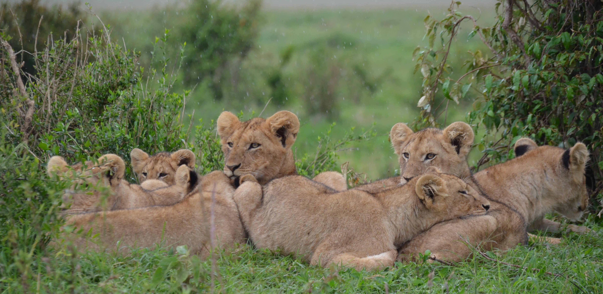

Львы отличаются своей силой, свирепым и доминирующим нравом. Но за этим суровым фасадом - социальные животные, которые живут в тесных группах, называемых прайдами, где львицы присматривают и даже вскармливают львят друг друга, а львы самозабвенно ласкаются со своим потомством.
Львов часто называют «король джунглей», и хотя на самом деле они живут не в джунглях, львы являются главными хищниками в своей среде обитания. Это означает, что львы способствуют стабилизации популяций травоядных животных, таких как буйволы, антилопы и зебры. Так как они охотятся на самых слабых животных в стаде, львы способствуют поддержанию сильной и здоровой популяции своей добычи. Если бы не львы, популяция травоядных выросла бы, что привело бы к чрезмерному стравливанию растительности и ухудшению здоровья их экосистемы.
